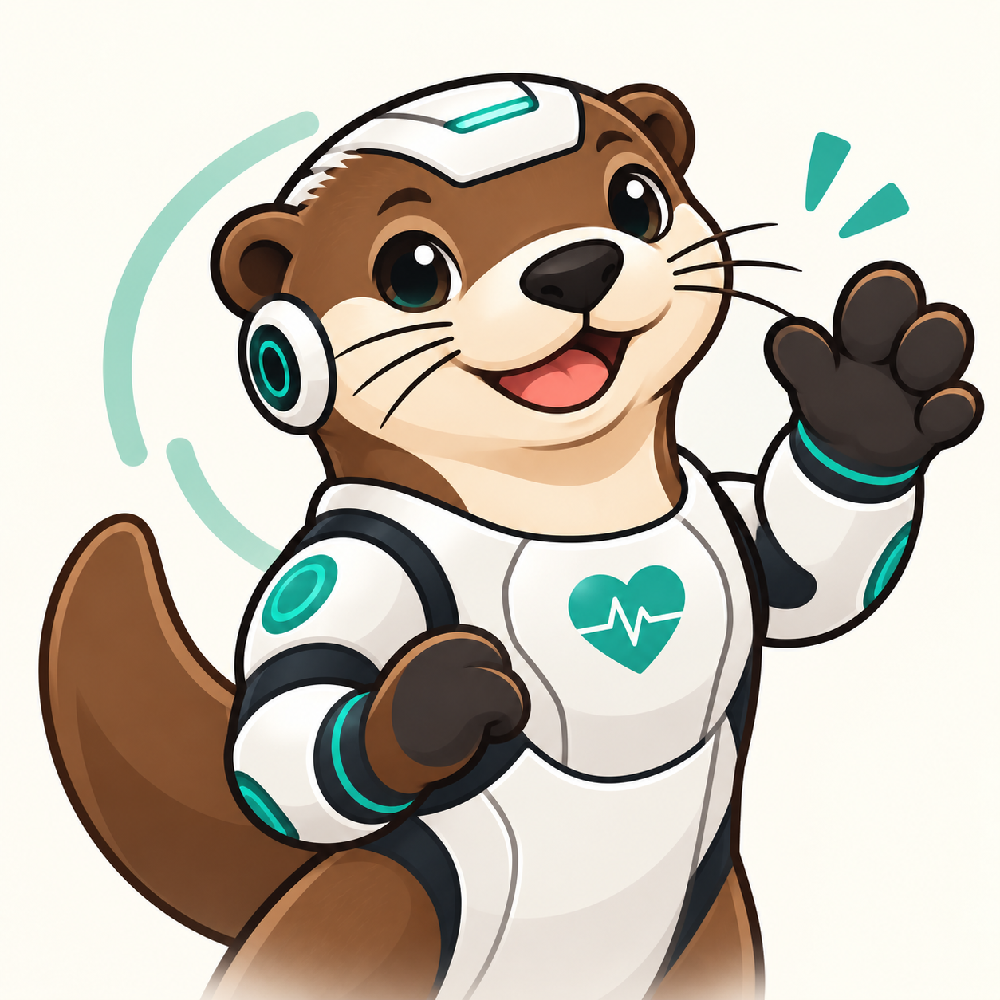

Saltar al contenido

NUTRIA
Health OS · ULima
Mi informe
Cargando…
NUTRIA
Health OS · ULima
Hoy
Patrones
Historial
Comida
Comunidad
Perfil
Mi informe
Lo que escribes se queda en este dispositivo. Nadie más lo ve.
NUTRIA necesita JavaScript para funcionar. Actívalo y vuelve a cargar la página.